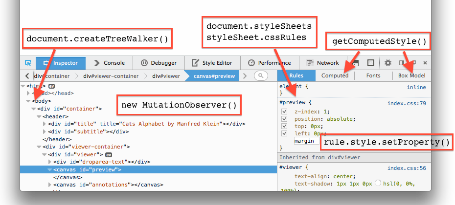
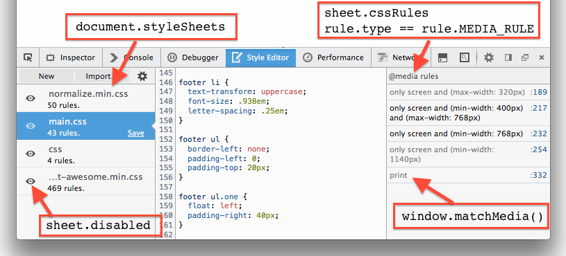

Make your own devtools using secret web APIs
Heather Arthur
@harthvader
github/harthur
California => black and white cookies
Developer Tools
Firebug Lite
- getfirebug.com/firebuglite
- circa 2006
- bookmarklet and inject script
mini tools
Firebug Lite Lyte
Demo
The APIs
used in mini tools:
window.onerrorwindow.performancedocument.elementFromPoint()
The APIs
DOM and CSS
The APIs
DOM and CSS
The APIs
window.performance.timing

In-content devtools
- pesticide.io - layout debugging
- goggles.webmaker.org - inspecting HTML
- bgrins.github.io/devtools-snippets